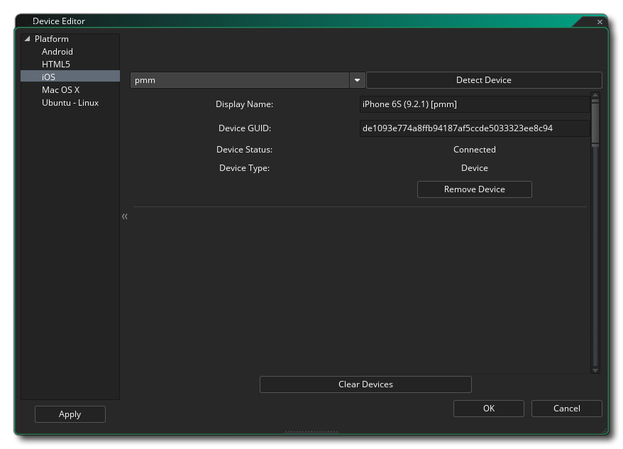
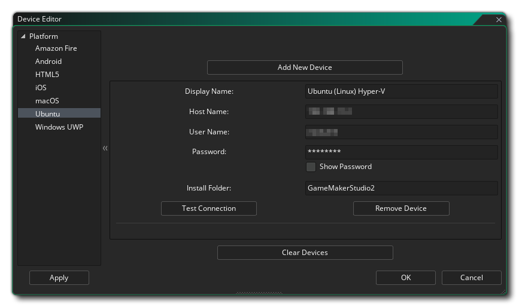
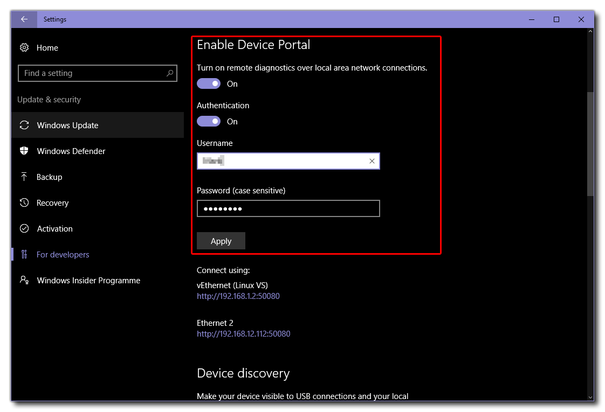

单击 目标平台列表 中的铅笔按钮
目标平台列表 中的铅笔按钮  可访问 设备管理器：
可访问 设备管理器：
单击此按钮将打开设备管理器，你可以在其中为要编译和测试的目标平台配置不同的设备（请注意，可用的平台将取决于你拥有的 许可证，而不是所有设备都可见）。你可以在下面找到有关为每个目标平台配置设备的详细信息：

在这里，你可以单击 添加新设备 按钮以手动将新设备添加到列表中，也可以单击 检测设备 按钮让 GameMaker Studio 2 自动检测通过有线连接方式连接的设备。 你还可以通过单击标记为 运行 AVD 的按钮来设置 Android 虚拟设备。 这将打开 Android 虚拟设备管理器，你可以在其中创建新的 AVD（有关详细信息，请参阅 此处）。 创建 AVD 后，需要从 AVD 管理器启动它，然后在 GameMaker Studio 2 中单击 检测设备 按钮，它会自动添加到设备列表中：
添加设备后，可以使用 测试连接 按钮检查连接，或者通过单击 删除设备 按钮将其从列表中删除。

HTML5 设备管理器用于在设备列表中添加不同的浏览器，以便在运行时进行定位。 你需要单击 添加新浏览器 按钮，然后为设备命名并将 GameMaker Studio 2 指向浏览器可执行文件的路径。如果存在任何冲突，你还可以设置端口号（默认为 51264），并根据需要设置允许的 Web 服务器，主机名和 CIDR IP 范围。

在设置iOS设备之前，你 必须 已配置好 Mac 设备并测试其连接（有关详细信息，请参阅下文）。 完成后，你可以从窗口顶部的下拉菜单中选择要定位的 Mac，然后单击 检测设备 按钮，让 GameMaker Studio 2 自动查找已连接的 iOS 设备。连接后，设备详细信息将显示在此窗口的列表中。

要将 Mac 设备添加到管理器，你必须首先单击 添加新设备 按钮，该按钮将添加设备并出现一些空白字段，你需要填写这些字段以启用连接。首先，你需要为设备命名，以便在目标列表中识别它，然后提供 Mac 的主机名（或 IP）。然后，你必须提供要链接到的用户的用户名以及密码。如果你愿意，还可以将 Mac 上的 安装文件夹 更改为你希望 GameMaker Studio 2 存储项目构建文件的位置。
完成所有操作后，你可以单击 测试连接 按钮以确保 GameMaker Studio 2 可以与 Mac 通信。
注意：如果你正在为 iOS 开发，那么你 必须 首先完成此操作并建立与你希望用于开发的 Mac 的有效连接。注意：你 必须 已在目标 mac 上启用了 远程登录。这可以通过转到你希望能够登录的用户的 首选项 - > 共享 和 启用远程登录 来完成。

要将 Ubuntu（Linux）设备添加到管理器，你必须首先单击 添加新设备 按钮，该按钮将添加设备并出现一些空白字段，你需要填写这些字段以启用连接。 首先，你需要为设备命名，以便你可以在目标列表中识别它，然后提供 Ubuntu 计算机（或 VM：虚拟机）的主机名（或 IP）。然后，你必须提供要链接到的用户的用户名以及密码。你还需要提供在 Ubuntu 计算机上要用于安装项目的文件夹。完成所有操作后，你可以单击 测试连接 按钮以确保 GameMaker Studio 2 可以与 Ubuntu 计算机通信。
在为 Windows 10 UWP 目标平台添加设备之前，需要在设备上配置设备门户（Device Portal）。 如果你不这样做，GameMaker Studio 2 将无法与设备通信，也无法正确创建你的 UWP 应用程序。
启用开发者模式的最简单方法是在 Windows 搜索中键入 开发人员模式，然后单击将显示的 文件资源管理器开发人员设置 条目。 这将打开以下窗口：
你需要选择 开发人员模式 选项（可能需要 Windows 下载并安装一些其他软件包），然后选择下面的 启用设备门户 选项。 设备门户允许 GameMaker Studio 2 与 Windows 10 PC 通信，启用后，你将需要提供 用户名 和 密码： 
请注意，用户名和密码对于门户应该是唯一的，并且不能是 Microsoft 帐户或其他 Windows 凭据使用的用户名和密码。 提供此信息后，单击应用按钮，然后关闭设置管理器并返回 GameMaker Studio 2。
有关设备门户的更多信息，请参阅此 Microsoft 文章：适用于 Windows 桌面的设备门户。
你现在可以在 GameMaker Studio 2 中打开 设备管理器 并设置要使用的设备：
要将 Windows 10 UWP 兼容设备添加到管理器，必须首先单击 添加新设备 按钮，该按钮将添加设备并出现一些空白字段，你需要填写这些字段以启用连接。 首先，你需要为设备命名，以便你可以在目标平台列表中识别它，然后是主机名 - 这是网络上承载游戏的 Windows 10 设备的 IP 地址，必须以 “:50443” 为后缀以设置端口号。 之后，添加你在设备门户中设置的用户名和密码（如前所述）。 你可以将 PIN 留空，因为 UWP Windows 10 桌面版不需要。
有关涵盖不同 UWP 输出（桌面、手机和 XboxOne）的更具体设置详细信息，请参阅 YYG 帮助台：设置 UWP


所有不同的设备窗口底部都有一个 清除设备 的选项，单击该选项后，将从列表中删除所有连接的设备。
设置完设备后，你可以从 GameMaker Studio 2 IDE 顶部的 目标平台选项连接到其中的任何一个设备，测试 / 构建游戏会将项目推送到该设备：